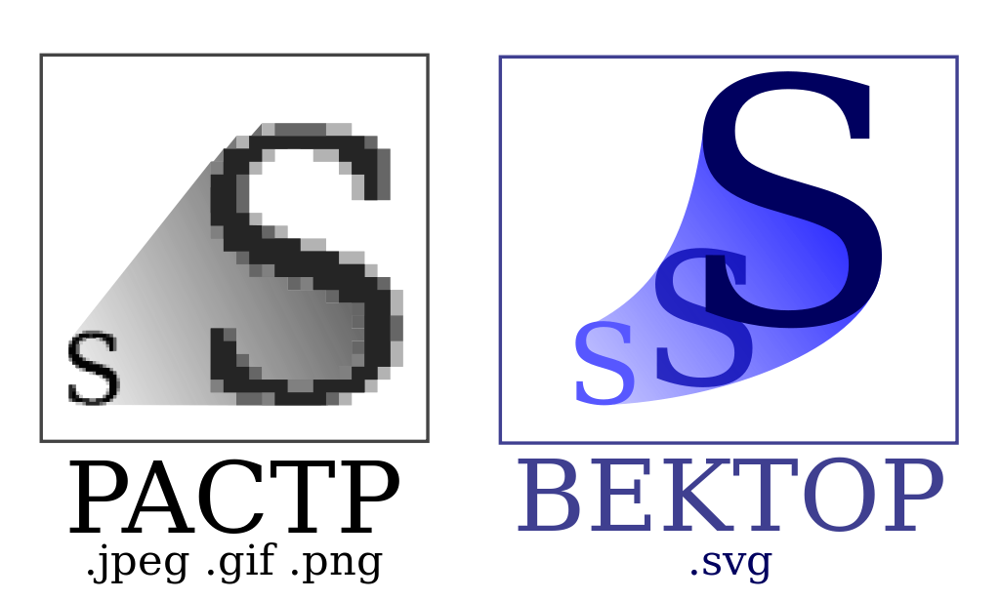

Векторна графіка (також геометричне моделювання або об'єктно-орієнтована графіка) — створення зображення в комп'ютерній графіці з сукупності геометричних примітивів — (точок, ліній, кривих, полігонів), тобто об'єктів, які можна описати математичними виразами.
Векторна графіка для опису зображення використовує вектори, на відміну від растрової графіки, яка описує зображення як масивпікселів (точок).
Сучасні дисплеї та принтери — це растрові пристрої. Перед тим як відобразити, або надрукувати векторне зображення, спочатку треба його перетворити у растрове зображення — масив пікселів. Розмір створюваного растрового зображення залежить від використаної роздільної здатності растрового пристрою. Таким чином, легко перевести векторне зображення у відповідний растровий формат, а зворотне перетворення дуже складне. Зображення переведене з векторного формату у растровий збільшується у розмірах, та втрачає властивість масштабування без втрати роздільної здатності. Також втрачається можливість редагувати елементи зображення як окремі об'єкти. Розмір векторного зображення залежить від кількості елементів зображення, та від переліку їх властивостей.
На початку комп'ютерної епохи в 1950 році а також в 1980, використовувались різні типи відображення векторної графічної системи. В цих системах електронне ядро ЕПТ монітора направлялось прямо щоб намітити необхідну форму, лінійний сегмент як лінійний сегмент, залишок екрану при цьому відображається чорним. Цей процес повторювався багато разів на секунду щоб уникнути блимання картинки. Ця система дозволяє відображати лінійне зображення з дуже високою роздільною здатністю, і переміщати зображення, які є показані без (на цей час) немислимо величезної кількості пам'яті, яка була б потрібна системі растрово-еквівалентного рішення. Ці засновані на векторі монітори були також відомі як X-Y displays.
Окрім цього існує вузький клас пристроїв, орієнтованих виключно на відображення векторних даних. До них відносяться графічні пристрої, а також деякі типи лазерних проекторів.
Термін векторна графіка використовується в основному в контексті двомірної комп'ютерної графіки.
Переваги векторної графіки:
Недоліки векторної графіки:
Цей список неповний. Є різні типи кривих (Catmull-rom сплайни, NURBS і так далі), які використовуються в різних випадках.
Також можливо розглядати растрове зображення як примітивний об'єкт. Відповідно до концептуальної точки зору, він поводиться як прямокутник.